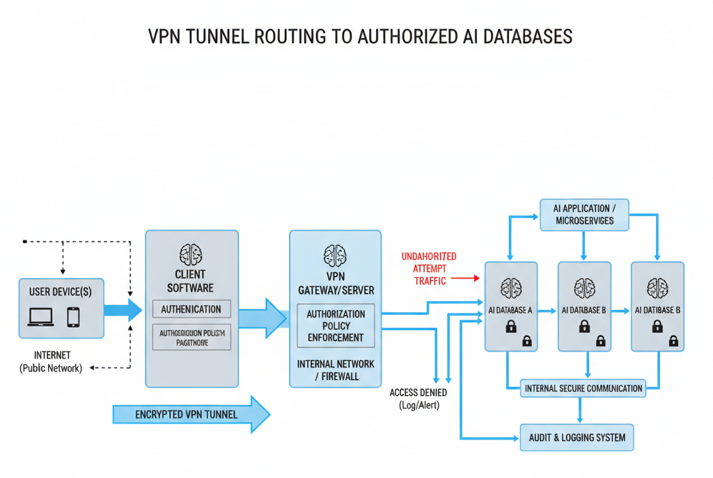
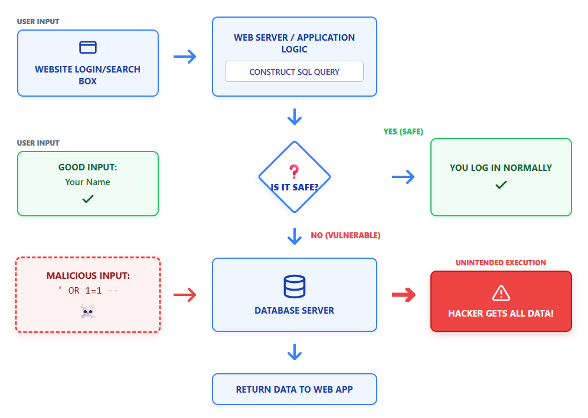

The Cybersecurity Landscape
Why do we need to secure our AI servers? Ram need login credential to access ADAMAS Data. When we type a password, it shows "..." so that others cannot see it. Now suppose Madhu saw the password and accessed ADAMAS data and he deleted some data's which could be very important.
Thus, Madhu did a data breach. He can change our Passwords, and other essentials data. He can then sell the data by encrypting it. To make sure this doesn't happen, we need to secure the network. Login credentials thus must be protected.
We can do it by Two factor authentication (By sending OTP to your phone). We can also use VPN to hide our specific networks which we want to protect. We only allow familiars to access a network using a VPN.

The CIA Triad
- Confidentiality: We must make sure the data intended for a certain person/group should be accessed by them and nobody else.
- Integrity: We took the data for a specific data. Now someone modified the data and they specific work cannot be done. Now then we cannot have data of some information. This means the data didn't maintain integrity.
- Availability: We store our data on Google cloud because we trust it. But we cannot trust ADAMAS cloud because we see 504 page a lot. Thus, not much trust. This is availability.
Types of Hackers
- Black Hat: Individuals with extraordinary computer skills restoring to malicious or destructive activities.
- Grey Hat: An individual which works both, offensive and defensive at various times.
- White Hat: An individual hacking skill and using them for defensive purposes. Also known as security analyst.
- Suicide hackers: Individual who aims to bring down critical infrastructure for a cause and are not worried. To face any circumstances.
- Script Kiddie: An unskilled hacker who compromises system by running scripts from the tools and software's developed by real hackers.
- Cyber Terrorist: Individuals with wide range of skills motivated by religious or political beliefs to create fear by large scare disruption of computer networks.
- State Sponsored Hackers: An individual employed by the government to penetrate and gain top secret information to damage information system to other governments.
- Activists: Individuals who promote political agenda by hacking specially defacing or disabling websites.

Attack Vectors
Phishing Attack: It's a trick user revealing sensitive information like password or any confidential data. Usually done through fake email and messages, appear to be from trusted sources like repeated company, banks, etc. Eg: Fake login pages asking for credentials.
Malware Attack: Malicious software is designed to harm the system. It includes:
- Virus: Multiple types of viruses. A virus in pen drive can make a short cut in C drive damaging the original files breaking the security and the antivirus may fail to work.
- Worms: Spreads through network. Unlike virus, it can spread to all the machines in a network.
- Spy Ware: Secretly monitors and collects information.
Password attack: Subscribing on cookies from untrustable website, it can steal all of your data and password and it will not need extra permission to access them next time.
- Brute force attack: The hackers gather data and run an algorithm with the collected data and try all possible combinations of the password.
- Dictionary attack: Uses common password.
DOS Attack: Denial of services. A DOS attack floods a system or network with high traffic making it unavailable to user.
Man in the middle: Attackers secretly interpret communication between two parties. Getting password by some way. Getting password by calling you or your trustable party.

SQL (Structure Query Language) Injection: Attackers insert malicious SQL statements into input fields (like search boxes or login forms) to manipulate the backend database. It tricks the system into executing unintended commands.
- Unauthorized Access: Attackers can view hidden data, bypass logins, or steal sensitive information directly from the database.
- Data Manipulation: They can modify, add, delete, or even wipe out entire database tables.
"Without securing our cyberspace our personal data might be compromised. We are heavily dependent on digital technology."
Q.1) What is cyber security?
Ans: It is a practice of protecting digital devices, networks, applications and data from unauthorized access, digital attacks or damage. It's combinations of technology processes and user education to ensure confidentiality, integrity and availability of information. These are the three pillars of cyber security is known as CIA Triad (confidentiality, Integrity and Availability).
Q.2) Why we need to secure our network?
Ans: We need to secure our cyber space because we are heavily dependent on digital technology. Without securing our cyberspace our personal data might be compromised.
- To protect personal information's.
- Prevent financial loss.
- Ensure privacy.
- Maintain business continuity.
- Protect against cybercrimes.
- Safeguard national security.
- Prevent data loss and damage.
Q.3) Design a smart agriculture system using IOT to improve farming efficiency and productivity. (10 Marks)
Ans: A Smart Agriculture System leverages the Internet of Things (IoT) to create a network of interconnected physical devices that collect and exchange field data over the internet without human intervention. This enables precise, automated farming to maximize yield and minimize resource wastage.
I. System Architecture & Components
- Sensors (Data Acquisition): A sensor is an electronic device that detects physical or environmental changes and converts them into measurable electrical signals. For this system, we deploy:
- Soil Moisture Sensor: Detects the exact water content in the earth.
- Temperature Sensor: Monitors ambient climate to prevent heat stress on crops.
- Working Principle: Sensing element detects physical parameter → Transduction converts it to an electrical signal → Signal processing amplifies it → Sent to the controller.
- Microcontroller (The Brain): A compact integrated circuit designed to perform specific tasks in an embedded system. It controls the entire IoT mechanism and consists of:
- CPU: Executes all instructions and logical decisions.
- Memory Unit: RAM and ROM for processing and storing operations.
- I/O Ports: Connects the external input sensors and output actuators.
- Connectivity & Cloud Processing: Through Wi-Fi or Bluetooth, the microcontroller sends the sensor data to a Cloud system. The cloud acts as the decision-maker. It continuously compares the received soil moisture value with a pre-set condition (e.g., threshold set at 30% moisture).
- Actuators & User Interface (Execution):
- Actuators: An actuator converts electrical signals into physical, mechanical actions. In this system, we use an Electrical Actuator (like an AC/DC motor) attached to a water pump or irrigation valve.
- User Interface (UI): A mobile or web dashboard allows the farmer to monitor real-time crop health, adjust moisture thresholds, and manually override the pumps if needed.
II. Complete Workflow (Automatic Irrigation Example)
- Step 1 (Sense): The physical quantity (dry soil) is detected by the moisture sensor.
- Step 2 (Transmit): The sensor converts this physical state into an electrical signal and sends it to the microcontroller.
- Step 3 (Process): The data is sent to the cloud. The system determines the moisture is below the 30% threshold and decides the field needs water.
- Step 4 (Actuate): A digital signal is sent to the actuator (the water pump motor), turning it ON automatically.
- Step 5 (Feedback): Once the sensor detects the moisture has reached the optimal level, the system processes this new data and turns the actuator OFF, ensuring zero water wastage and highly efficient productivity.